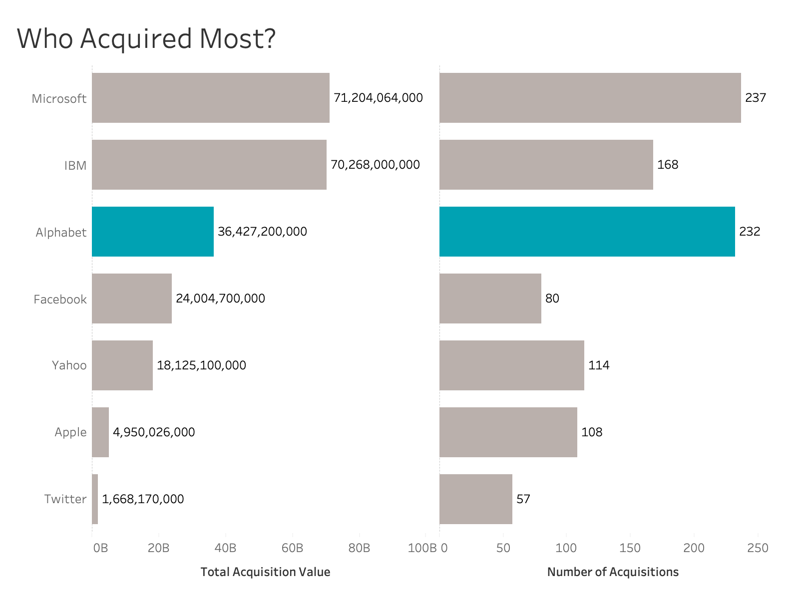

Check out more of my work
Vanessa Liang


On November 1, Google confirmed that it will pay $7.35 per share for the wearables company in an all-cash deal that values Fitbit at $2.1 billion. It is common for big tech companies to acquire small ones working on different technologies. Since 1987, there have been about 996 merge and acquisition from the seven big tech companies: Alphabet, Apple, Facebook, Microsoft, IBM, Twitter, and Yahoo!.

This year, IBM closed its acquisition of Red Hat, the Linux-based technologies provider, for $34 Billion, positioning the acquisition the top of all M&A of the seven companies. After Red Hat, the second biggest acquisition is Microsoft's acquisition of LinkedIn, the largest social networking site focused on the working world.

The top 20 acquisitions compose of 6 from IBM, 6 from Microsoft, 5 from Alphabet, 2 from Yahoo, and 1 from Facebook. Business of companeis on the list vary from mobile, advertising, business intelligence, to video games. Fitbit is the only one developing wearble devices, ranked 19 on the list.

For the past 20 years, Microsoft acquired about 237 companies with total value of more than 71 billion. Alphabet acquired 232 companies with more than 36 billion. Twitter was the least active one in acquisition.

Alphabet started its first acquisition in 2005 by buying Android with 50M. Since then, Alphabet has acquired approximately 232 companies across different industries. The above chart is on a logarithmic scale. With this scale, percentage increases and decreases are comparable. From the chart we can see that for the past five years, the acquisition value of Alphabet's were comparably larger than the 2005 to 2015 decade. And the number of acquisition is smaller than the previous 5-years, which may reflect the switch of Alphabet's acquisition strategies.